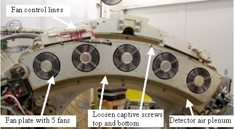
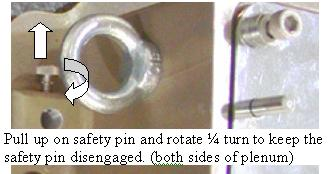

Operating Documentation
Direction 5193575-800, Rev# 5
LightSpeed 7.X Service Information - Adv
Operating Documentation |
| Required Persons | Preliminary Reqs | Procedure | Finalization |
|---|---|---|---|
| 1 | 20 mins | none |
This procedure defines the necessary steps to replace the DAS/Detector Air Filter.
| Last Revised: | February 28, 2005 |
| Item | Qty | Effectivity | Part# | Manufacturer | |
|---|---|---|---|---|---|
| Hex wrenches | (Field Supplied) | - | - | - | |
| Item | Qty | Effectivity | Part# | Manufacturer |
|---|---|---|---|---|
| Tywraps | AR | - | - | - |
| Item | Qty | Effectivity | Part# | Manufacturer | |
|---|---|---|---|---|---|
| Plenum Filter assembly | 1 | - | - | - | |
No general safety information.
| CRUSH HAZARD. | |
| UNEXPECTED GANTRY ROTATION CAN CAUSE SERIOUS INJURY. | |
| Never service the gantry with the axial drive enabled. Use the gantry rotation lock to lock out gantry rotation. See safety menu of Service Document gui for appropriate procedures. |
Remove side and top gantry covers.
Refer to Parts Replacement → Gantry → Enclosure → (Cover Removal Procedure).
Disable Axial Drive and HVDC on the service switch panel then remove the gantry front cover.
Shut down power to the rotating assembly using the breaker behind the service switch panel. See Illustration 1 for Rotating Assembly Power Breaker.
Illustration 1: Rotating assembly power breaker

| ESD Hazard with the air plenum removed since the Detector A/D boards are exposed. Use proper ESD grounding when working in this area. | |
Position the DAS at 12 o’clock and lock gantry rotation.
Remove the fan control lines and screws holding the fan plate to the Air plenum. See Illustration 2 for VCT DAS front view.
Illustration 2: VCT DAS Front View

Lift off the fan plate.
Loosen the 8 captive screws holding the plenum in place.
Release the safety pin on each side of the plenum to allow the plenum to be removed. See Illustration 3.
Illustration 3: Plenum Safety Pin

Using the Plenum ribs as handles grab the plenum and lift it off the gantry. Be careful not to damage the temperature sensors.
Illustration 4: Plenum with Fan plate removed

Remove the filter assembly from the back of the air plenum and reinstall new filter assembly. See Illustration 5.
The filter assembly is attached to the rear of the plenum. The back side of the filter is an EMC screen that can be damaged if poked or hit.
Illustration 5: Air filter

There are locator pins on each end of the Detector assembly to align the plenum (see Illustration 6). Using the plenum ribs carefully install the plenum onto the alignment pins. Do not poke the EMC mesh on the back side of the plenum filter. Make sure no cabling is caught between the detector casting and the air plenum.
Illustration 6: Alignment pins for plenum

Install the plenum casting screws and torque to:
3 - M6 screws on inside radius by detector (into lightseal plate):
| 8 N-m | 6 lb-ft | 71 lb-in | 82 Kg-cm |
5 - M8 screws on sides and outside radius (near fan and heater control boards):
| 19.2 N-m | 14.2 lb-ft | 170 lb-in | 196 Kg-cm |
Install the fan plate.
Reconnect fan control lines.
Torque fan plate screws and nuts to:
| 8 N-m | 5.8 lb-ft | 70 lb-in | 80 Kg-cm |
Restore power to gantry rotational assembly and check to make sure all 5 fans are running. Use a piece of paper or similar object to make sure fans are pulling air into the plenum. A fan that is not running will still have the fan blades moving as air is pushed back out of the plenum through that fan port.
No finalization required.